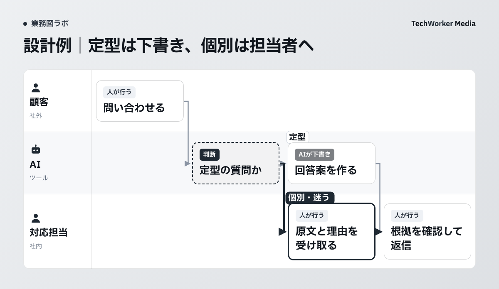

問い合わせの返信をAIに任せたいとき、最初に決めたいのは対応の範囲です。営業時間の案内と、返品の可否を決める返信では、必要な確認が変わります。
TechWorkerは、部署別の業務図テンプレート集を公開しています。今回は、その問い合わせ一次対応の設計例を読み解きます。実稼働や時間削減を検証した事例ではありません。
公開テンプレートでは、どこを人が引き取るか
定型の質問はAIが回答案を作り、個別の事情がある質問は担当者へ渡す設計です。

図の中央に「定型の質問か」という判断があります。定型の質問は、AIが下書きを作る工程へ進みます。個別の事情を含む質問は、対応担当が原文を確認します。どちらの経路でも、返信は人が確かめてから行います。
図で確かめられるのは、担当と仕事の順序です。分類の正確さや返信速度は、この図からは分かりません。「AIが自動で」という札も、稼働や性能を保証する表示ではありません。
たとえば営業時間を聞かれたときは、承認済みの案内に沿う回答案を用意できます。購入日や利用状況を見て返金を判断する質問は、個別の事情の確認が必要です。この2つは、記事で説明するための記入例です。
任せる範囲は、回答元と例外の条件で決める
回答元を指定し、判断に足りない情報があるときは人へ渡す条件を書きます。
試す前に、回答案の根拠に使う資料を決めます。料金表、営業時間、配送案内などから、現在有効なものを選びます。同じ内容の古い資料が残っていれば、参照対象から外します。
次に、人が対応する質問を具体的に書きます。返品・補償の可否、契約条件の変更、個人情報の訂正などです。資料の記載が食い違うときや、該当する案内がないときも、担当者へ渡します。
これは公開テンプレートを使う際の試用案です。TechWorkerがこの条件で顧客対応を運用した実績ではありません。自社の商品、契約、対応方針に合わせて条件を直してください。
| 決める項目 | 記入例 |
|---|---|
| 回答元 | 責任者が確認した営業時間と配送案内の現行版 |
| AIが作るもの | 回答案、参照した箇所、未確認の項目 |
| 人へ渡す条件 | 返金・補償の判断、資料の食い違い、根拠の不足 |
| 任せない操作 | 顧客への返信、契約の変更、登録情報の書き換え |
| 確認する人 | 対応担当。不在時は対応責任者が引き取る |
AIの回答が流暢でも、資料にない約束はできません。担当者が回答元まで辿れる状態にして、文面と根拠を一緒に受け取ります。
個別の質問を、回答案づくりへ流さない
分類で迷う質問は原文を担当者へ渡し、判断が済んでから次へ進めます。

定型と個別を分ける際は、質問の短さだけで決めません。「返品できますか」の一言にも、購入時期や商品の状態などの確認が必要です。
判断できない質問には、もっともらしい回答案を付けずに引き継ぎます。担当者が受け取るのは、質問の原文、参照できた資料、止まった理由です。添付資料がある場合も、自社で許可した範囲だけ扱います。
この図は、公開テンプレートの分担を短く示した設計例です。AIによる分類の実装や、問い合わせ管理システムとの接続を示す実画面ではありません。
最初の試用は、送信しない範囲で確かめる
個人情報を除いた質問例で回答案を作り、担当者が元資料と照合します。
最初は、顧客へ送信しない試用環境で確かめます。利用するAIの保存条件と社内ルールを確認してから、公開情報や個人情報を除いた質問例を渡します。実際の顧客データの持ち込みは、その確認を済ませてから判断します。
質問例には、定型質問と個別質問の両方を含めます。営業時間の質問なら、回答元と文面が一致するかを見ます。返金の質問なら、人へ引き継がれたかを見ます。根拠のない約束を補った場合は、対象の質問と参照資料を記録します。
確認記録は、次の項目で残せます。これは試用用の記入例です。
| 記録する項目 | 記入例 |
|---|---|
| 質問と分類 | 営業時間の質問／定型 |
| 使った資料 | 営業時間の現行案内、確認日 |
| AIが出した結果 | 回答案と案内の参照箇所 |
| 担当者の確認 | 案内と一致／修正が必要 |
| 次の処理 | 下書きまで試用を続ける／条件を直して再確認 |
分類の誤り、根拠の不足、確認者が引き取れない状態があれば、対象を広げません。実際に試した件数と修正内容を記録してから、次の判断をします。この記事には、合格率や削減時間の実測値はありません。
業務図を導入の判断へつなぐ
自部署の回答元、例外、確認者を埋めてから、試す仕事を一つ選びます。
問い合わせ対応のどこで仕事が止まるかを見ます。受付が詰まるのか、回答案づくりなのか、担当者の確認待ちなのかで、試す工程が変わります。対応件数だけでは、その場所を判断できません。
テンプレートを使う場合は、担当者への聞き取りで現在の流れを確かめます。既存の案内や対応記録も合わせて、例外が発生する工程に書き込みます。人が判断する部分を残したまま、下書きの試用から始められます。
CompanyMap AIでは、聞き取り・資料・業務の記録の3つから、AIが部署の業務図を作ります。お客さまには、案内を配り、担当者が1人15分ほど答え、できた図を確認していただきます。図を確かめてから、任せる仕事を決めます。
出典と確認した範囲
- TechWorker「部署別 業務図テンプレート集」。2026年10月2日公開。問い合わせ一次対応の図と分担を、10月9日に確認しました。
- CompanyMap AI「業務図の読み方」。2026年10月8日更新。AIの下書きには確認する人を決めるという、自社の描き方の条件を確認しました。
- CompanyMap AI。2026年10月9日確認。3つの情報から部署の業務図を作るサービスの説明を確認しました。
公開テンプレートは設計例です。本記事の質問例、依頼項目、試用の記録欄は追加の試用案です。顧客への実導入、分類精度、削減効果は未検証です。